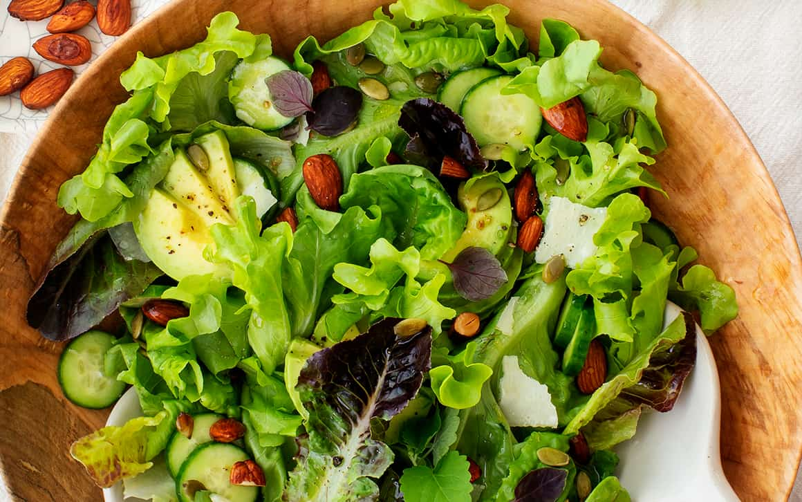

Green salads don't have to be boring, and these recipes are here to prove it!
I often make these salad recipes for a healthy lunch, but they're great cookout
and dinner side dishes too.alad recipes are my favorite way to showcase vibrant,
in-season produce—fruits and veggies that taste so good on their own that it doesn't
take much to make them into a delicious meal.On cold winter nights, I like to brighten
up our table with a colorful mix of root veggies and hearty greens. On beautiful, warm
days when I'd rather be outside than in the kitchen, summer salads are theperfect lunch
or dinner: they're simple to toss together, but they're super flavorful nonetheless.

Ingredients
1 cup mixed greens
1 cup baby spinach leaves
1 cup cucumber, sliced
1 cup carrot, shredded
1 cup red bell pepper, diced
Directions
Put all your mixed greens and spinach in a large bowl.
Add in the cucumbers, carrots, bell pepper and tomatoes